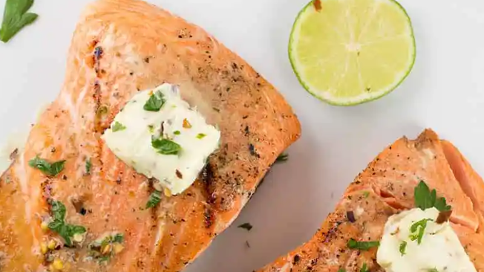

Steelhead Trout

The greatest Steelhead Trout Recipe EVER!
This is a really simple and quick way to prepare my favorite fish, Steelhead Trout. This recipe also works just as well on any similar fish or any filet with skin on.
Ingredients
- Steelhead filets, skin on. (scales can also be left on for ease of cooking if your fish monger has them available)
- Sea Salt
- Fresh cracked Black Pepper
- Brisket Rub or your favorite BBQ rub - I like the flavor profile of a good Brisket Rub for this meaty fish
- Butter or Seasoned Olive Oil, for basting
Steps
- Preheat your grill - we want it nice and hot, but not as hot as you'd grill a steak. Maybe something around 450 -500F
- Season your Filets with a little Sea Salt, the BBQ rub and fresh black pepper. Don't worry, it won't be long now.
- Place the filets on the grill, directly over the flame and sking side down.
- When the fat tartes to render between the meat and the skin there may be small flare ups, but no worries! Cooking skin side down over the hot coals or burners will let us get a nice crispy skin that is good to eat if you like it, or very easy to remove if you don't.
- When the filets are cooked about half way through, I like to move them to indirect heat and pop the lid on to let the continue to cook to dsired doneness. This is an excellent time to...
- Baste with butter or seasoned olive oil! A simple garlic oil is nice, but i tend to keep it real simple with simple butter. Yes, a lot of it will simply melt away, but some will work its way through the flaky meat of the fish and it helps to reatain moe moisture
- Remove from the grill, let rest 3-4 minutes and plate.
I like to plate this with the skin remove and it is incredibly easy to do so, since we got it nice and grispy over direct heat. Usually I can lift the entire meat of the filet right off of the skin with just a metal spatula. Sometimes I hold down the skin from the thin end with a fork while lifting away with the spatula, but either way it is simple. Cooking this beautiful fish outside is a real treat and as they say, "fish don't fry in the kitchen". This ets us keep any fish smells outside and in particular onthe grill, where we can let the grill burn off any remaining fish oils after the cook so we have a ready to go surfae for next time! Enjoy!